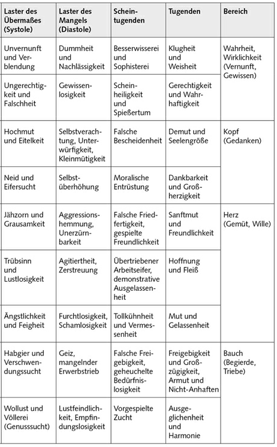
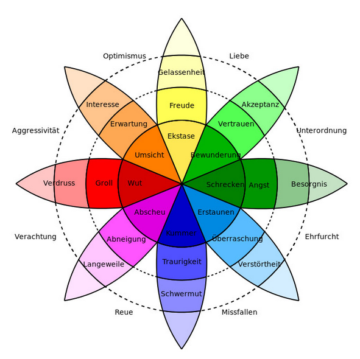

Aristoteles (mit seiner Nikomachischen Ethik)
Thomas von Aquin (Summe der Theologie). (Thomas Anquinas)
Laster und Tugenden (vices and virtues)
Tugend = Abeleitet von Tauglichkeit/Tüchtigkeit = Gesundheit der Seele
Laster = Abeleitet von schmähen, tadeln, verbieten = Abgeleitet von lästern = Zur Gewohnheit gewordener Fehler
Tugenden -> Führen zum Glück | Laster versperren den Weg zum Glück
Wenn wir danach streben, im Tun, Sprechen, Denken und Fühlen möglichst immer tugendhaft zu sein und das Laster und die Leidenschaften zu verringern und zu meiden, kann sich die Tugend zunehmend von einem vereinzelten Ereignis zu einer gewohnheitsmäßigen Haltung entwickeln, freiwillig das Gute zu tun.
Mittelweg
humanistische Liberalismus
Ohne Geiz, Habgier und Neid gäbe es kein ständig fortschreitendes Wirtschaftswachstum, keine Triebfeder zur Anhäufung von Kapital, während sich die Werbung unsere Eitelkeit und Genusssucht eifrig zunutze macht.
Dennoch muss man sich angesichts einer immer weiter fortschreitenden Ausbeutung der Natur, der schamlosen Geldgier ganzer Wirtschaftszweige, einer erschreckenden zwischenmenschlichen Entfremdung, der raschen und unbedachten Bereitschaft zur Ehrverletzung im Alltag sowie einer um sich greifenden psychischen Destabilisierung des Individuums fragen: Leben wir nicht vielleicht in einer ausgesprochen dekadenten Gesellschaft, deren Grundübel im Fehlen einer Lebensführung besteht, die sich an den Tugenden orientiert und an dem, was wirklich gut ist, statt lediglich an dem, was sich gerade gut anfühlt?
Die westliche Gesellschaft leidet allerdings auch an einer Störung. Deren Ursache liegt in der Verwechslung des wirklichen Glücks mit einer zwanghaften Suche nach dem Ersatzglück in den Lastern. Die kollektive Gemütsverfassung, die große Teile der kapitalistischen Gesellschaft erfasst, zeichnet sich durch einen Verlust an Sinn, Geborgenheit, Lebensfreude und Seelenfrieden aus.
autoritäre Fundamentalismus
dogmatischen Vorschriften bezüglich Sitten und Moral, mit gesellschaftlicher Intoleranz und der Verfolgung Andersdenkender ersetzen. Doppelmoral -> moralisches Handeln aus Egoismus.
Tugend- und Laster
Basierend auf dem Mittelweg (golden rule Aristotetle):
Tugend als Mittelmaß zwischen zwei einander entgegengesetzten Lastern. Die Tugend, die dazwischenliegt, bildet einen Ausgleich zu diesen beiden Extremen, nicht unbedingt im Sinne eines Mittelmaßes, das ein wenig von beiden enthält, sondern eher im Sinne einer Synthese, welche die Einseitigkeiten der beiden Laster auf einer höheren Ebene auflöst. So findet sich zum Beispiel bei einem tugendhaften Menschen nicht so sehr eine gesunde Mischung zwischen wütendem Jähzorn und Unempfindlichkeit gegenüber Ärger; vielmehr ist er in der Lage, mit der Tugend der Geduld und Sanftmut eine Wutreaktion, die automatisch abläuft, bewusst zu kontrollieren und den auftretenden Ärger auf eine Weise zu äußern, die andere nicht verletzt.
Jede Tugend kann lediglich vorgespielt und geheuchelt sein. Nur die echten Tugenden sind dazu in der Lage, das entsprechende Laster zu überwinden. Verstellung und Heuchelei sind Ausdruck des Lasters der Ungerechtigkeit und Falschheit, womit der Gerechtigkeit und der Wahrhaftigkeit -- ähnlich wie der Klugheit und der Weisheit -- eine gewisse Sonderstellung vor den anderen Tugenden zukommt.
Es ist ein Irrtum zu glauben, die Tugend sei nicht mit der Erfüllung angeborener Triebe, Instinkte und Bedürfnisse vereinbar. Der Unterschied zwischen einem »Heiligen« und einem »Sünder« besteht nicht darin, dass der »Heilige« sich von allem Triebhaften fernhält, während der »Sünder« den natürlichen Leidenschaften freien Lauf lässt.
Ganz im Gegenteil ist ein tugendhafter Mensch kennt den Unterschied zwischen Lust und Glück und käme nicht auf die Idee, das Glück in der kurzfristigen Lustbefriedigung zu suchen, was aber nun auch nicht bedeutet, dass die Lust verboten wäre.
Nicht nur sind die Triebe und Instinkte nichts Schlechtes, vielmehr sind sie ganz besonders gut, ja heilig, denn sie entspringen dem Leben, das sich aus der Fülle ergießt. Das gilt für all jene Instinkte, die Freud als »Lebenstrieb« oder Eros zusammenfasste.
»Das Böse handelt kraft eines mangelnden Gut«, schreibt Thomas von Aquin. Das Gute ist dem Licht vergleichbar, das Böse der Dunkelheit. Die Dunkelheit ist nichts anderes als die Abwesenheit des Lichts und somit eigentlich aus sich selbst heraus nichts. Treffen Licht und Dunkelheit aufeinander, dann wird die Dunkelheit erhellt, nicht das Licht verdunkelt. Wo das Gute ist, kann sich das Böse nicht halten. Doch wo das Gute fehlt, da breitet das Böse sich aus. Konkret äußert sich das Böse als Zusammentreffen von bestimmten Lastern mit entsprechenden Gelegenheiten in der Außenwelt, die destruktives Verhalten begünstigen (Krieg)

Leidenschaften
Die Leidenschaften sind von einer Defizitmotivation bestimmte Triebe, die aus einem Gefühl der Sinnlosigkeit, der Leere und der Abgeschiedenheit des Ichs heraus entstehen. Sie streben zwar nach einer Verwirklichung der unbefriedigten Sehnsucht und nach einer Wiederherstellung eines Zustandes der Erfüllung und Zufriedenheit, verhindern dies jedoch gleichzeitig.
Emotion vs. Gefühle (Emotion vs. Feeling)
Leidenschaften sind nicht das Gleiche wie Gefühle. Kant verglich die Gefühle mit Wasser, das durch einen Damm bricht, die Leidenschaften aber mit einem reißenden Strom, der sein Bett tiefer und tiefer gräbt. Emotionen sind notwendige und hilfreiche Zustände unseres Organismus, mit denen wir unmittelbar auf Ereignisse reagieren und dadurch zu erkennen vermögen, ob etwas gut oder schlecht, angenehm oder unangenehm, wichtig oder unwichtig für uns ist. Dagegen sind die Leidenschaften wie eine Krankheit, die sich tiefer und tiefer in den Organismus hineinfrisst, wenn ihr nicht durch entsprechende Heilmittel entgegengewirkt wird. Werden wir von Leidenschaften gepackt, dann sind wir nicht mehr wir selbst, sondern handeln wie von einer fremden Macht besessen.
Rochefoucauld: »Man mag noch so weit den Leidenschaften entrückt erscheinen, man ist ebenso gefährdet, von ihnen weggeschwemmt zu werden, wie zu erkranken, wenn man gesund ist.«
Meist benutzen wir die gleichen Begriffe, um ein Gefühl und um eine Leidenschaft zu bezeichnen, obschon es sich dabei eigentlich um Unterschiedliches handelt. Die Emotion des Stolzes zum Beispiel, die wir erleben, wenn wir erfolgreich etwas Schwieriges geleistet haben, liegt in der Nähe des Glücksgefühls und stellt eine positive Bewertung dar. Dagegen ist Stolz als Leidenschaft mit dem Laster des Hochmuts verbunden und kann einen Menschen innerlich verzehren, wenn sein Leben ausschließlich darum kreist, das eigene Ansehen abzusichern.
Emotion
Emotion hingegen ist eine ex-motion - eine Bewegung von innen nach aussen. Manche lesen es auch als e-motion - Energie in Bewegung.Es geht um Ausdruck, Handlung - und auch um Beurteilung.
Emotion ist eine Bewertung dessen, was gefühlt wurde, und wie dies ausgedrückt wird: der Tee ist heiss - das ist angenehm. Das Essen ist kalt - das ärgert mich.
Emotion bezeichnet eine Gemütsbewegung im Sinne eines Affektes. Affekt ist eine besondere Qualität des Fühlens, das durch die bewusste oder unbewusste Wahrnehmung eines Ereignisses oder einer Situation ausgelöst wird. Das Wahrnehmen geht einher mit physiologischen Veränderungen, spezifischen Kognitionen, subjektivem Gefühlserleben und reaktivem Sozialverhalten. Im Gegensatz zum Gefühl sind Emotionen als ein Affekt − vom agierenden Individuum aus gesehen − meist nach außen gerichtet kurz und intensiv. Der Begriff Affekt betrifft im deutschen Sprachgebiet eine oftmals mit einem Verlust der Handlungskontrolle einhergehende kurzfristige emotionale Reaktion. Physiologische Reaktionen auf Emotionen sind auch mit Messungen neurophysiologischer Parameter nachzuweisen. Es wurden jedoch keine Muster physiologischer Reaktionen gefunden, die eine eindeutige Diagnose einer Emotion erlauben würden.
Emotionen:
-
Freude
-
Wut
-
Ekel
-
Furcht
-
Verachtung
-
Traurigkeit
-
Überraschung

Gefühl
Ein Gefühl ist, was gefühlt wird, was wahrgenommen wird. Gefühl ist das, was über die Sinnesorgane an Impulsen und Empfindungen in das Bewusstsein hinein tritt. Da ist Wärme; da ist Kälte; da ist Hunger; da ist Angst...Ein Gefühl ist ohne Bewertung. Es wird einfach festgestellt, was da ist, ohne Urteil darüber, ob das gut oder schlecht, angenehm oder unangenehm sei. Es ist einfach so. Punkt.
Fühlen hat eine weibliche, passive Qualität. Es geht um Aufnehmen, Hingabe und Wahrnehmung.
Die Emotion oder der Affekt ist vom Fühlen oder dem Gefühl zu unterscheiden. So erfassen die Begriffe des Fühlens oder des Gefühls die unterschiedlichsten psychischen Erfahrungen und Reaktionen die sich beschreiben und damit auch versprachlichen lassen, wie u. a. Liebe, Angst, Ärger, Komik, Ironie sowie Mitleid, Eifersucht, Furcht, Freude und Liebe.
Vom Laster zur Tugend
Grundvoraussetzung für alles ist Liebe und guter Wille.
Von der Unvernunft zur Weisheit (Angemessner Einsatz des Verstandes)
| Übermaß | Mangel | Scheintugend | Tugend |
|---|---|---|---|
Unvernunft und Verblendung (übermäßige Selbstischerheit)
|
Dummheit und Nachlässigkeit
|
Besserwisserei | Klugheit und Weisheit Klugheit -> durch Einsicht gewonnenes Wissen das als gut Erkannte zu tun und das als schlecht Erkannte zu lassen
|
Gegenmittel:
|
Gegenmittel: Nicht zu bequem, zu eingebildet oder ist intellektuell zu beschränkt, sein um sich in seinen Handlungen durch kluge Überlegungen leiten zu lassen. |
Weisheit - Wer weise ist, ist zugleich klug, aber nicht jeder, der klug ist, ist auch weise. Wer weise ist, vermag über alles richtig zu urteilen. Weisheit beruht auf Erkenntnis und guten Willen. Weisheit ist ein vollkom-menes Zusammenspiel zwischen Geist und Charakter, zwischen Wissen und Tun. Voraussetzung für Weisheit:
|
Der Mensch ist fähig zur Einsicht. Durch den Intellekt gehen wir über reine Sinnestätigkeit hinaus und sehen in das innere Wesen der Dinge hinein. Der Verstand befähigt, den eigenen Standpunkt zu verlassen und einen anderen einzunehmen (zu verstehen).
Vernunft:
Den Verstand für das zu benutzen was (langfristig) zu meinem (und meiner Mitmenschen) besten Wohl führt.
Der Mensch ist dann vernünftig, wenn seine verschiedenen psychischen Kräfte und Fähigkeiten geregelt zusammenspielen und auf die Verwirklichung eines höheren Ziels und einer gesunden, förderlichen Entwicklung ausgerichtet sind. Verstand und Vernunft sind somit nicht das Gleiche. Der Verstand als Teilaspekt der psychischen Fähigkeiten lässt sich sowohl vernünftig als auch unvernünftig gebrauchen.
Von der Falschheit zur Wahrhaftigkeit
| Übermaß | Mangel | Scheintugend | Tugend |
|---|---|---|---|
Ungerechtigkeit und Falscheit Ungerechtigkeit -> Bewusste und willentlichen Grenzüberschreitung, die jemandem etwas Gutes wegnimmt oder etwas Schlechtes zufügt, ohne dass diese Person es verdient hätte. Warum? Täter wollen keine Gerechtigkeit wollen oder bedenken die Folgen ihrer Taten nicht. Gerechtigkeit ohne Liebe kann in Grausamkeit enden.
|
Gewissenslosigkeit | Scheinheiligkeit und Spießertum | Gerechtigkeit und Wahrhaft Nicht nur nach eigenen Bedürfnissen handeln sonder bewusst sein, dass jedes Geschöpf bestimmte Rechte besitzt. Gerechtigkeit:
Freundlichkeit, Dankbarkeit, Freigebigkeit, Fairness, Respekt gegenüber den Eltern |
| Falscheit -> Täuschung, Lügen, Heuchlei, Prahlerei, Manipulation, Hinterhalt, Verrat, Verlogenheit, List, Unaufrichtig gegenüber sich selbst. Die Warheit wird erkannt aber absichtlich verdreht. Sich selbst etwas vormachen. | Wahrhaftigkeit -> Ehrlichkeit Der äußere Ausdruck entspricht dem inneren Sein -> Authentizität. Umgekehrt bedeutet authentisch zu leben jedoch nicht, dass man alles, was man innerlich erlebt, ungefiltert nach außen kommuniziert. Ein wahrhafter Mensch kann nicht lügen, weil er nicht irgendetwas anderes sein kann, als er ist. Persönliche Integrität:
|
Vom Hochmut zur Demut
| Übermaß | Mangel | Scheintugend | Tugend |
|---|---|---|---|
Hochmut (Arroganz) und Stolz Beide sind anmaßend, arrogant und überheblich. Hochmut -> unkluge Fehleinschätzung des eigenen Seins und Könnens. Stolz -> eigenen Vorzüge werden richtig erkannt, doch auf unkluge und ungerechte Weise benutzt. Schwer zu beurteilen, ob jemand zu Recht auf einen Vorzug stolz ist oder ob er diesen nur hochmütig vorspielt. Durch ein betont »cooles« Gehabe (rar machen), wird versucht, sich selbst und die eigene Referenzgruppe als außergewöhnlich darzustellen.
|
Selbstverachtung, Unterwürfigket Bescheidenheit und Demut befreien und lösen ruhige, zufriedene Gefühle aus. Unterwürfigkeit dagegen führt zu Anspannung, zu Scham und Frustration. Wer sich nie zutraut, offen zu seiner Meinung zu stehen, seine Wünsche zu äußern, für seine Bedürfnisse einzustehen oder sich bei Ungerechtigkeiten zur Wehr zu setzen, erstickt den natürlichen Impuls des Ichs, seine eigenen Grenzen zu wahren. |
Falsche Bescheidenheit Wenn jemand bescheiden feststellt, Ehre und Lob wären ihm nicht wichtig, ein kleines Wort des Dankes würde schon genügen, verrät dieser als Bescheidenheit getarnte enttäuschte Wunsch nach Anerkennung, dass sich dieser Mensch in seinem Hochmut darin gefällt, innerlich auf all die Undankbaren hinabzublicken. |
Demut/Bescheidenheit und Seelengröße Wahre Demut erwartet weder Lohn noch Dank, denn sie geschieht aus Freude und Liebe, die sich selbst Lohn genug sind. Demut:
|
Eine andere Strategie, sich einen Vorrang zu sichern, wählt derjenige, der versucht, andere offen herabzusetzen, sie zu kritisieren, Eitelkeit -> übertriebenen Sorge um die eigenen Vorzüge. Während der Eitle äußere Ehrenzeichen leidenschaftlich begehrt, der Hochmütige sie rücksichtslos fordert, verschmäht sie der Stolze Ehrgeiz -> Im Sinne von Gier nach Ehre Töchtern der Ruhmsucht
|
Großsinnigkeit -> sich aufgrund der eigener Gaben großer Dinge für würdig halten. Sie schätzt andere dann gering ein, wenn sie scheinbar keinerlei Gaben besitzen oder diese nicht nutzen. Demut -> sich selbst in Anbetracht der eigenen Unzulänglichkeiten gering schätzen und andere wegen der ihnen verliehenen Gaben hoch. Seelengröße verhindert es, dass die Demut in Selbstverachtung und Unterwürfigkeit abgleitet, während die Demut verhindert, dass sich die Seelengröße zu Hochmut und Stolz aufbläht. Eigennutz abzulegen macht es möglich, anderen Menschen freiwillig und mit Freuden zu dienen, nicht aus feiger Unterwürfigkeit, sondern aus Achtung und Liebe. Wir müssen uns nicht mehr mit anderen vergleichen und nicht mehr abwägen, wer den größeren Nutzen davonträgt. Wir müssen nicht mehr stolz an unserer Version der Wahrheit festhalten und benötigen keine Nahrung für den Hochmut, indem wir uns trotzig im Recht wissen wollen. |
Demut
Exkurs: Die zwölf Stufen der Demut
Selbstlosigkeit zu erlernen ist eine lebenslange Herausforderung. Der Begründer des abendländischen Mönchstums, Benedikt von Nursia, beschreibt im siebten Kapitel seiner Regel zwölf Stufen der Demut, Die ersten Schritte in der Entwicklung der Demut beziehen sich somit auf die richtige spirituelle Verankerung. Je höher wir steigen, desto mehr verkörpert sich die Demut auch bis hinab ins Leibliche.
1. Gottesfurcht: Die Gottesfurcht ist somit nichts anders als unbedingte Liebe zu Gott, wozu die Stärke notwendig ist, stets das Gute zu tun und das Böse zu meiden.
2. Willenlosigkeit: Auf der zweiten Stufe soll man den eigenen Willen nicht lieben und sich nicht in der Befriedigung seiner Wünsche gefallen. Statt eifrig immer neue Ziele zu verfolgen, die nur dem eigenen Stolz dienen, ermöglicht das Loslassen der aktiven Willenstätigkeit eine Öffnung für das reale Leben, das größer und schöner ist, als sich das kleine Ich erträumen könnte.
3. Gehorsam: Gehorsam im spirituellen Sinn bedeutet die Fähigkeit, auf die innere Stimme zu horchen. Der Gehorsam ermöglicht es, dass dasjenige, das klein ist, sich demjenigen unterordnet, das groß ist. Dadurch wird der Hochmut unmöglich gemacht, denn dieser beruht auf einer Verwechslung des Kleinen mit dem Großen. Wir öffnen uns für die hilfreiche Führung durch andere Menschen, die auf dem Pfad der Demut vielleicht schon weiter vorangeschritten sind.
4. Geduld: Die vierte Stufe der Demut ermöglicht es, widrige Umstände geduldig anzunehmen, sie als notwendige Prüfungen zu verstehen und sogar still und selbstbeherrscht auszuharren, wenn einem Unrecht getan wurde. Ohne zu ermatten oder uns zu entziehen, entwickeln wir die Fähigkeit zur geduldigen Akzeptanz, indem wir versuchen, den Wert aller Ereignisse zu ergründen, auch der unangenehmen und schmerzhaften.
5. Wahrhaftigkeit: Statt dass wir uns selbst etwas vormachen und anderen etwas vorspielen, sind wir bereit, ehrlich unsere Unzulänglichkeiten anzuschauen und uns stets zu fragen, ob wir Unrecht getan haben. Indem wir unsere Mängel einer Person des Vertrauens offen mitteilen, verstecken wir uns nicht, sondern entwickeln den Mut zur Authentizität und Integrität.
6. Bescheidenheit Es geht vielmehr darum, seinen maßlosen Egoismus zurückzunehmen und sich nicht zu scheuen, auch kleine, glanzlose Arbeiten ohne Aussicht auf Ruhm zufrieden und heiter auszuführen. Auch niedrige Arbeiten können Spaß machen. Auch einfache Lebensverhältnisse können beglücken. So stellt sich langsam die Fähigkeit zur heiteren Genügsamkeit ein.
7. Selbstlosigkeit: Hier entwickelt sich die Fähigkeit, seine ganze ichbezogene Persönlichkeit mit ihrem Anspruch auf Durchsetzung, Kontrolle und Macht loszulassen. Das Ich verzichtet auf jegliche Anspruchshaltung sowie auf Verteidigung..
8. Lernbereitschaft: Es geht um die Fähigkeit und den Willen, von denjenigen zu lernen, die mehr wissen und erlebt haben als ich, die weiser und demütiger sind. Dies schließt auch die Bereitschaft ein, sich für neue und zunächst vielleicht ungewohnte Dinge zu öffnen, anstatt alles immer besser zu wissen und nur das hören und lernen zu wollen, was man ohnehin schon weiß.
9. Schweigen: sich von der ständig kommentierenden und alles besser wissenden Stimme des urteilenden Verstandes zu distanzieren und still zu werden, um die leise Stimme des Herzens besser zu hören. Zugleich führt das Schweigen im zwischenmenschlichen Verkehr dazu, dass man sich mit Urteilen erst einmal zurückhält, um möglichst unvoreingenommen hinzuhören.
10. Ernsthaftigkeit: Nur eine ruhige, ernsthafte Haltung macht es möglich, dass die Demut auch bis in den Körper hinein vordringen kann. Aus der stillen Ernsthaftigkeit und Tiefsinnigkeit heraus kann dann aber durchaus Humor entstehen, und es darf auch lautes, herzhaftes Lachen ertönen. Es ist dies ein ganz anderer, feinfühligerer Humor, Ausdruck einer heiteren Seele und eines gelösten Leibes.
11. Ruhige Rede: Benedikt empfiehlt eine ruhige, bescheidene Rede und dass man nur wenig und wohlbedacht sprechen soll. Statt loszulärmen, drauflos zu plappern und pausenlos zu schnattern, verbreitet der demütige Mensch mit seiner Rede eine Stimmung um sich herum, die andere in die Stille und in die Demut einlädt.
12. Verneigung: Als bewusste Geste und Übung kann aber das Verneigen des Hauptes noch tiefer in die Demut hineinführen. Indem ich mich vor allem, was größer ist als ich, verneige, kann ich alles geduldig annehmen und bin vollkommen zufrieden. Das Sich-Verneigen in Demut als innere Grundhaltung des gesamten Lebens führt mit der Zeit zu einer vollkommenen Entspannung im Körper, die zugleich von Energie und Lebendigkeit erfüllt ist.
Seelengröße
-
Selbstwert
-
Optimismums
-
Hoffnung
-
Selbstvertrauen, Vertauen darauf, dass man etwas beeinflussen kann
-
Zielorientierung (Realismus, Energie, Mut)
Vom Neid zur Dankbarkeit
| Übermaß | Mangel | Scheintugend | Tugend |
|---|---|---|---|
Neid und Eifersucht Verbunden mit Vorstellungen des Ungenügens und des Mangels Neid -> Die Person oder Gruppe, mit der ein Neider sich vergleicht, kommt besser weg als er selbst. Der Begriff Missgunst bezeichnet die weniger schlimme Form des Neides. Bei der schlimmeren Form sprechen wir von Schadenfreude. |
Selbstüberhöhung | Moralische Entrüstung Man empört sich nicht deshalb über die Lasterhaftigkeit anderer Menschen, weil man sich aufrichtig um ihr Wohlergehen sorgt oder weil man selbst ein so leuchtendes Beispiel für Tugendhaftigkeit abgibt, sondern um dem verzehrenden Neid oder der nagenden Eifersucht Luft zu verschaffen. »Moralische Entrüstung ist Eifersucht mit einem Heiligenschein« |
Dankbarkeit und Großherzigkeit (Güte) Der Grund für die Herzensgröße gütiger Menschen ist ihre Dankbarkeit. Großherzige Menschen schauen nicht auf das, was sie nicht besitzen oder nicht sind, sondern sind zutiefst für alles Gute dankbar, das ihnen geschenkt wird. Ein dankbarer Mensch vergisst nie, was ihm Gutes widerfährt. Eine schonungslose Analyse des eigenen Neides kann dazu beitragen, sich mit der Zeit immer mehr vom Neid zu lösen und eine Haltung der Dankbarkeit einzunehmen. Der Weg von einem missgünstigen Dasein zur Dankbarkeit führt über die Akzeptanz eigener Gefühle des Neides oder der Eifersucht. |
Eifersucht -> »Eifersucht ist eine Leidenschaft, die mit Eifer sucht, was Leiden schafft.« Als Emotion erleben wir Eifersucht, wenn wir meinen, seitens einer Drittperson nicht genügend Aufmerksamkeit oder Zuneigung zu erhalten, während scheinbar eine andere Person, von der wir ausgestochen werden, in einem höheren Maße durch die Drittperson begünstigt wird. |
Ein Leben, das sich am Sein statt am Haben ausrichtet, betrachtet das Dasein stets vom Standpunkt der Ewigkeit aus – im Wissen darum, dass jeglicher Besitz wieder verloren geht, es sei denn, der Besitz kann im eigenen Herzen aufbewahrt werden. Die Dankbarkeit über das eigene Dasein führt zum Wunsch, anderen Menschen mit Nächstenliebe, mit Mitgefühl, Freundschaft, Sympathie und ohne Vorurteile oder Egoismus zu begegnen. |
Vom Jähzorn zur Sanftmut
| Übermaß | Mangel | Scheintugend | Tugend |
|---|---|---|---|
Jähzorn und Grausamkeit Jähzorn -> aggressiven Gefühlsausbruch, der plötzlich und unvermittelt (»jäh«) aus kleinstem Anlass gegenüber Personen oder Dingen auftritt.
Feindschaft, Hass, Rachsucht, Grausamkeit -> Wer hasst, verabscheut nicht nur einen Menschen, sondern möchte ihm auch schaden. Hass entspringt oft anderen Lastern, insbesondere dem Neid, dem gekränkten Ehrgeiz oder der Eifersucht. Ohne vorangehende Liebe kann Hass nämlich gar nicht auftreten. |
Aggressionshemmung, Unerzürnbarkeit | Falsche Friedfertigkeit gespielte Freundlichkeit | Sanftmut (Milde) und Freundlichkeit
Friedfertigkeit <> Schwäche Aggressivität <> Stärke Freundlichkeit -> ein freundlicher Mensch ist allen gegenüber rücksichtsvoll, taktvoll und höflich, auch gegenüber Personen, die er nicht mag. |
Zorn in Sanftmut umwandeln
Bei der Verwandlung des Zornes ist es ganz besonders wichtig, seine eigenen Erlebnisse und Reaktionen ganz genau und möglichst unvoreingenommen zu beobachten. Hass und Rachsucht sind oft der traurige Endpunkt einer langen Entwicklung.
Jähzornigen Reaktionen geht praktisch immer ein leiser, unterdrückter Ärger voraus.
Diese erste leise Ärgerreaktion sollte man als Signal dafür wahrnehmen und schätzen lernen, dass man sich in seinem Respekt herabgesetzt, in seinen Grenzen verletzt fühlt und eine bestimmte Äußerung oder Handlung als ungerecht erlebt. Wenn es gelingt, diese frühe, oft berechtigte Ärgerreaktion wahrzunehmen und das Gefühl auf angemessene Weise auszudrücken, nicht aggressiv und verletzend, sondern selbstbewusst und respektvoll, dann kann ein weiteres Aufschaukeln unterbrochen und eine Zornesexplosion verhindert werden. Tatsächlich stellt der Ärger oft eine gesunde Reaktion auf Übergriffe und Verletzungen dar, weitaus angemessener als ein niedergeschlagener und ängstlicher Rückzug.
Einfach ungehemmt »Dampf abzulassen«, seinen Ärger und seinen Zorn ungefiltert »abzureagieren«, verstärkt diese Gefühle nur noch weiter und lässt die Hemmschwelle für zukünftige aggressive Ausbrüche sinken; stattdessen ist ein kluger Umgang mit dem Ärger erforderlich. Mit der Selbstbeobachtung in Situationen, in denen man sich ärgert, sollte eine Art Selbstgespräch einhergehen, indem man sich Fragen wie die folgenden stellt: Was macht mich am meisten wütend? Wieso bin ich gerade auf diese Person zornig? Was verletzt mich so sehr? Gäbe es eine Möglichkeit, meine negativen Gefühle angemessen auszudrücken?
Es geht nun darum, diesen Dialog mit sich selbst bewusst neu zu gestalten. Statt dass wir weiter Öl ins Feuer gießen und uns in den Zorn hineinsteigern, lernen wir, uns selbst zu beruhigen und Kontrolle über die Situation zu erlangen. So können eingefahrene Denkmuster, die Wut, Zorn und Rachgier zur Folge haben, langsam abgebaut und durch sanftmütigere und friedlichere Reaktionen ersetzt werden.
-
Ärger direkt und knapp mitteilen (»das macht mich wahnsinnig ärgerlich«)
-
auf globale negative Zuschreibungen verzichten
-
Kritik nur ganz spezifisch äußern (»weil du mich einfach ignoriert hast«)
-
die Position des andere verstehen durch geduldiges und tolerantes zuhören
-
identifiziere unausgesprochene Forderungen an andere oder an das Leben die uns frustrieren, weil sie nicht erfüllt werden
Man darf und soll sich ärgern, aber so, dass man weder sich noch andere schädigt und kein neues Unrecht schafft.
Vom Trübsinn zum Fleiß
| Übermaß | Mangel | Scheintugend | Tugend |
|---|---|---|---|
Trübsinn und Lustlosigkeit
Kummer und Trübsinn sind somit die Folge einer Frustration, die wegen der Unbeständigkeit und Vergänglichkeit aller materiellen Dinge eintritt. |
Agitiertheit, Zerstreuung Party-Gesellschaft -> Krampf-hafte Ausgelassenheit gespielte Freude, Suche nach Zerstreuung, Ablenkung, oberflächlicher Unterhaltung und Stimulation sind nichts anderes als die unruhige Kehrseite von Trübsinn und Überdruss. |
Übertriebener Arbeitseifer, demonstrative Ausgelassenheit | Hoffnung und Fleiß
|
Von der Ängstlichkeit zum Mut
| Übermaß | Mangel | Scheintugend | Tugend |
|---|---|---|---|
Ängstlichkeit und Feigheit Übertriebene Vermeidung von Risiken Peinlichkeit/Scham ie gleiche Person kann sich in unterschiedlichen Situationen einmal als mutig, dann als feige erweisen, und beides kann klug sein, wenn die zu erwartenden Ergebnisse der verschiedenen Handlungsalternativen abgewogen werden. Draufgängerisches Handeln ist nicht immer klug, während »Feigheit nicht selten auf guten Informationen beruht«, wie der englische Schauspieler Peter Ustinov bemerkte. Herrschaft der Mehrzahl fördert Passivität und Kleinmut |
Furchtlosigkeit, Schamlosigkeit | Tollkühnheit und Vermessenheit | Mut und Gelassenheit Mutig ist, wer sich trotz Risiken und Widerwärtigkeiten auf eine Gefahr einlässt, weil er sich davon einen großen Gewinn erhofft. Mut -> überlegte und hoffnungsvolle Selbsthingabe aus Liebe. Mut zeigt sich nicht nur im aktiven Tun (Energie), sondern auch im unerschütterlichen Festhalten (Standhaftigkeit) an dem, was wesentlich ist, und im Loslassen (Gelassenheit) dessen, was ich nicht mehr festhalten kann oder will |
Vom Geiz zur Großzügigkeit
| Übermaß | Mangel | Scheintugend | Tugend |
|---|---|---|---|
Habgier und Verschwendungssucht Habgier -> suchtartiges Streben nach materiellem Besitz, weitgehend unabhängig von dessen tatsächlichem Nutzen »Habsucht ist nichts anderes als Völlerei mittels unverdaulicher Güter«, schreibt Sofsky |
Geiz (Sparsucht), mangelnder Erwerbstrieb Geiz -> übertriebene Sparsamkeit und Unwillen, etwas von seinem Besitz herzugeben. |
Falsche Freigiebigkeit, geheuchelte Bedürfnislosigkeit nur deshalb von seinem Besitz hergibt, um als großzügiger Wohltäter zu erscheinen |
Großzügigkeit, Armut und Nicht-Anhaften Die Haltung, den Besitz nicht so wichtig zu nehmen, lässt sich am besten einüben, indem man wertvolle Dinge loslässt und verschenkt. Durch bewusste Freigebigkeit lässt man andere am eigenen Besitz Anteil haben und verleiht dadurch zwei wichtigen Tatsachen Ausdruck:
Ein freigebiger Mensch ist sich bewusst, dass sich das Rad des Schicksals beständig dreht. Sogar wenn er nur wenig besitzt, denkt er immer noch daran, was er anderen geben kann. Geld und andere wertvolle Dinge bewusst spenden und verschenken, nicht wahl- und ziellos, sondern so, dass wirklich etwas Gutes und Sinnvolles bewirkt wird. Der Unterschied zwischen Geben und Nehmen ist unwichtig geworden. Vollkommen entspannt öffnet sich das Herz für die unermessliche Fülle des Daseins. |
Von der Genusssucht zur Ausgeglichenheit
| Übermaß | Mangel | Scheintugend | Tugend |
|---|---|---|---|
Wollust und Genussucht die Bedürfnisbefriedigung übersteigt das sozial akzeptierte Maß |
Lustfeindlichkeit, Empfindungslosigkeit Abstumpfung des Geistes |
Vorgespielte Zucht | Ausgeglichenheit und Harmonie Mäßigkeit Sinnliches geniessen Das Schöne geniessens Im Zustand der Nüchternheit nimmt der Organismus nicht mehr und nicht weniger auf, als er braucht. Statt dass Fantasien und Lüste alles mit sich reißen, verhilft die Nüchternheit zu einer festen Verankerung in der Realität und im Moment. |